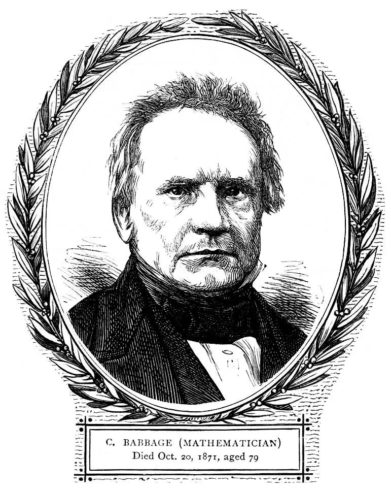

Charles Babbage (1791-1871)
Diseñó la máquina analítica: conceptos de unidad de cálculo y almacenamiento separadas.
Leer más
Sus diseños introdujeron ideas fundamentales: control de flujo, registro de datos y separación de unidades, que anticiparon la arquitectura moderna.